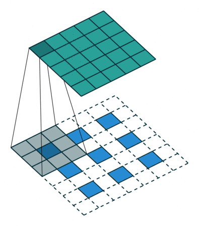

v.
Overview
- Generative vs. Discriminative Models
- Generative Adversarial Networks (GAN)
- Loss, training, best practice of GAN
Generative Models
Generative vs. Discriminative
- We've learnt NN, Deep NN, and CNN already
- A class of logistical models used for classification or regression - discriminative models
- They can reveal underlying hidden structure of data
- More interesting question: can we find a model that can produce same (or at least similar) distributions as the training data?
- towards generative approach
Generative Model Applications
- Generate artificial data (text, faces, scenes, game worlds, etc.)
- ChatBots, virtual assistants (OpenAI ChatGPT, Baidu Ernie, Huawei Pangos, Alibaba Tonyi, etc.)
- Text to image "translation" (midjourney, stable diffusion, and others)
- MRI image reconstruction for medical diagnose
- Fake voice, fake video
Generative Example
Generative Approach
The traditional approach is Maximum likelihood estimation (MLE)
Figure from Ian Goodfellow, Tutorial on Generative Adversarial Networks, 2017
Why GAN?
- Can make use of latent information while sample generation
- Latent information are those that cannot be directly observed
- No Markov Chain assumption - direct method
- Asymptotically consistent (claims to recover true distribution)
- Samples produced are high-quality
- Learn to generate by playing a 2-player game!
Generative Adversarial Network (GAN)
Generative Adversarial Network (GAN)
- What is GAN?
- Generative: it's a generative model that learns the underlying distribution from data
- Adversarial: two competing networks (adversaries) that try to beat each other
- Network: it is a type of neural networks
Generator
- Produces "fake" data from random noises
- Learn to generate data to "fool" the discriminator
- Gradually find the latent variables transformation to the domain space
Discriminator

- Simply a binary classifier ((C)NN) - convolutional layers for image data
- The inputs are real and fake data generated by the generator
- Try to distinguish between "fake" and real data
GAN = Generator + Discriminator
- GAN: 2-player competing game that combines generator and discriminator as one big network $$\begin{rcases} \boxed{Random \atop Noise \color{cyan}(z)} & \xRightarrow{\fcolorbox{red}{orange}{\color{black}Generator (G)}} & Fake \atop Data \color{skyblue}(G(z)) \\ \boxed{Real \atop Dataset} & \xRightarrow{\>\>\>\> Load \>\>\>\>\>} & Real \atop Data \color{mediumspringgreen}(x) \end{rcases} \xRightarrow{\fcolorbox{red}{pink}{\color{black}Discriminator (D)}} \begin{cases} Fake \atop \color{magenta}D(G(z)) \\ \\ Real \atop \color{chartreuse}D(x) \end{cases}$$
- Generator (G): turns noise into an imitation of the data; tries to trick the discriminator
- Discriminator (D): classifies the input; tries to identify which one is fake and which on is real
- Question: how can we train this network?
Train a GAN
- 2 Player Game: need train 2 neural networks
- Which network should we train first, G or D$\qquad\qquad\qquad\qquad\qquad\qquad$
- Discriminator - Why - : target is known!
- D is a binary classifier: real or fake
- Real data: the training set; Fake data: from generator
- 2 networks learn to compete against each other at the same time!
Loss of GAN
- Recall the Cross Entropy Loss Definition (L9 - Neural Networks) and GAN definition:
- $\qquad \char"1d4db (\color{red}p \color{white},\color{lime}q\color{white}) = -[\color{red}p \color{white} \cdot log (\color{lime}q \color{white}) + (1-\color{red}p \color{white}) \cdot log (1- \color{lime}p \color{white})]$ $$\begin{rcases} \boxed{Random \atop Noise \color{cyan}(z)} & \xRightarrow{\fcolorbox{red}{orange}{\color{black}Generator (G)}} & Fake \atop Data \color{skyblue}(G(z)) \\ \boxed{Real \atop Dataset} & \xRightarrow{\>\>\>\> Load \>\>\>\>\>} & Real \atop Data \color{mediumspringgreen}(x) \end{rcases} \xRightarrow{\fcolorbox{red}{pink}{\color{black}Discriminator (D)}} \begin{cases} Fake \atop \color{magenta}D(G(z)) \\ \\ Real \atop \color{chartreuse}D(x) \end{cases}$$
- Discriminator loss: $\char"1d4db_D = \color{lime}-[\char"1d53c_{x \text{\textasciitilde} p_{data}}logD(x) \color{magenta} + \char"1d53c_{z \text{\textasciitilde} p_{z}}log\Big(1-D\big(G(z)\big)\Big)]$
- combines D's output for real data and D's output for fake data
- Generator loss (compete against D): $\char"1d4db_G = \color{red}-\char"1d4db_D = \color{magenta}\char"1d53c_{z \text{\textasciitilde} p_{z}} log\Big(1-D\big(G(z)\big)\Big) $
- $\color{lime} \char"1d53c_{x \text{\textasciitilde} p_{data}}logD(x)$ has no impact on G
GAN as A Minimax Game
- Discriminator loss: $\char"1d4db_D = \color{lime}-[\char"1d53c_{x \text{\textasciitilde} p_{data}}logD(x) \color{magenta} + \char"1d53c_{z \text{\textasciitilde} p_{z}}log\Big(1-D\big(G(z)\big)\Big)]$
- Generator loss (compete against D): $\char"1d4db_G = \color{red}-\char"1d4db_D = \color{magenta}\char"1d53c_{z \text{\textasciitilde} p_{z}} log\Big(1-D\big(G(z)\big)\Big) $
- Generator: try to fool the discriminator by generating real-looking data $\gets$ minimising D's success rate
- Discriminator: distinguish between real and fake data $\gets$ maximising D's success rate
- This yields a minimax game objective function:
- $V(G,D) = \underset{G}{min}\> \underset{D}{max} [\color{lime}\char"1d53c_{x \text{\textasciitilde} p_{data}}logD(x) \color{magenta}+ \char"1d53c_{z \text{\textasciitilde} p_{z}}log\Big(1-D\big(G(z)\big)\Big)\color{white}]$
- Nash equilibrium: $\frac{\partial \char"1d4db_D}{\partial D(x)}=0 \implies D^*(x) = \frac{p_{data}(x)}{p_{data}(x)+p_{generator}(x)} \\ \qquad\qquad\qquad\qquad \implies \forall x,\> \color{lime} p_{data}(x) = \color{magenta} p_{generator}(x)$
GAN Dilemma
- As a minimax game:
- What if the discriminator behaves badly
- the generator cannot get accurate feedback and the loss cannot represent the reality
- What if the discriminator does a good job
- the gradient of of loss function drops down to close to zero and learning becomes super slow or even jammed - gradient vanishing problem
GAN in Practice
- Discriminator:
$\underset{D}{max}\> \color{lime} [\char"1d53c_{x \text{\textasciitilde} p_{data}}logD(x) \color{magenta} + \char"1d53c_{z \text{\textasciitilde} p_{z}}log\Big(1-D\big(G(z)\big)\Big)]$ - Generator: $\underset{G}{min}\> \color{magenta}\char"1d53c_{z \text{\textasciitilde} p_{z}} log\Big(1-D\big(G(z)\big)\Big) $
- In practice, directly optimise this
generator objective does't work well - Use a different objective function for generator
- Heuristic objective: $\underset{G}{max}\> \color{skyblue}\char"1d53c_{z \text{\textasciitilde} p_{z}} log D\big(G(z)\big) $
- The idea: instead of minimising the likelihood of discriminator being correct, now maximising the likelihood of discriminator being wrong
- Not theoretical but heuristic solution $\to$ doesn't change the "objective" of fooling discriminator
GAN Training Algorithm
for number of training iterations do
for k steps do ('someone find k=1 is more stable while others use k>1')
sample mini-batch of m noise samples {z1,z2,...,zm} from noise p_g(z)
sample mini-batch of m examples {x1,x2,...,xm} from real data p_d(x)
update the discriminator by ascending the stochastic gradient of 'V(G,D)'
end for
sample mini-batch of m noise samples {z1,z2,...,zm} from noise p_g(z)
update the generator by ascending the stochastic gradient of heuristic objective
end for- Train discriminator for some steps, then generator
- Stop training at some points
- The generator is ready to produce "real-like" data
GAN is Hard to Train
- Mode collapse: generator keeps generating similar data - so nothing to learn
- Vanishing/Exploding gradients from discriminator to generator
- Two learning models need to have balance to achieve stability
- Maintain trade-off of generating more accurate vs high coverage sample
- GANs do not naturally have a metric for convergence
- Ideally, all losses go to $\approx 0.69 = -log \frac{1}{2}$ $$\begin{align*} \char"1d4db (\color{red}p \color{white},\color{lime}q\color{white}) &= -[\color{red}p \color{white} \cdot log (\color{lime}q \color{white}) + (1-\color{red}p \color{white}) \cdot log (1- \color{lime}p \color{white})] \\ &= -(\frac{1}{2} log \frac{1}{2} + \frac{1}{2} log \frac{1}{2}) \\ &= -log \frac{1}{2} \approx 0.69 \end{align*}$$
Conditional GAN (CGAN)
- It's still a GAN
- Use the real label as an extra input to generator
- Trained generator can produce real-like data according to the label
- Multi-class discriminator can be used
- * Others like ACGAN, DCGAN, InfoGAN, etc.
GAN Architecture Guidelines
- Generally, generator is an upsampling convolutional
network while discriminator is a downsampling
convolutional network - Replace any pooling layers with Fractionally Strided
Convolutions (FSC) for generator and strided convolution
for discriminator - Use batch normalisation in both the generator and
discriminator - Remove fully connected hidden layers for deeper architectures
- Use ReLU activation in generator for all layers except the output, which uses $tanh$
- Use LeakyReLU activation in the discriminator for all layers
Summary
- GAN is an active area of research
- GAN architecture is flexible to support variety of learning problems
- GAN does not guarantee to converge
- Needs a lot of work in theoretic foundation of network
- Evaluation of GAN is still an open research
Questions?